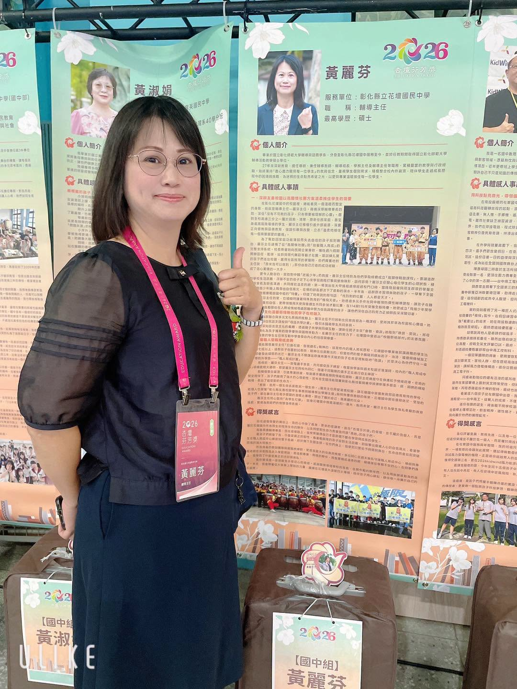
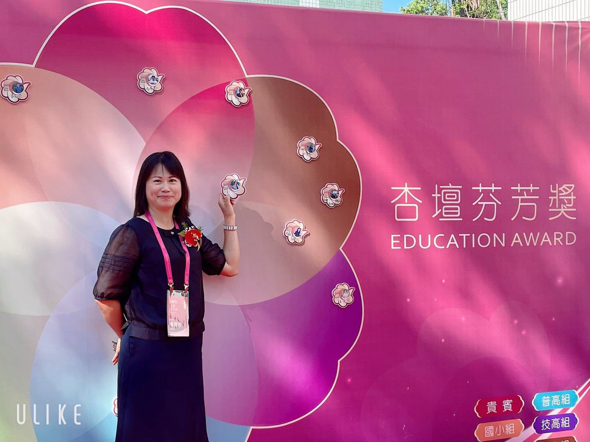

Some teachers are remembered for what they taught. Others are remembered for being there on the day a student had nowhere else to go.
On September 10, 2026, the Ministry of Education's K-12 Education Administration held the ceremony for the 2026 Education Award (杏壇芬芳獎) — a national honor given to educators whose work goes far beyond the lesson plan. Out of all of Taiwan, 71 educators and 10 outstanding teams were chosen: 81 awards in total.
One of those 71 was Huang Li-fen, Director of Counseling at Huatan Junior High.
For Huatan, this is the third time in four years.
Director Tsai Hung-hsiao. Director Chiu Wan-ting. And now Director Huang Li-fen. Three colleagues from one small township school, each recognized on a national stage within four years — which says less about luck than about what this staff room has quietly chosen to value.


Walking Beside Them
Director Huang has spent years in student affairs and counseling — the part of a school that rarely makes the news. It is slow work: sitting with a student who will not talk yet, calling a family again, staying late because a conversation could not be rushed. She is known for meeting children with professionalism, warmth, and a patience that does not run out.
She also believes that confidence is something a student discovers by doing. Through Huatan's drum team and its Artisan Incubation Center, she has helped students find a talent they did not know they had — a rhythm they can keep, a skill they can build with their hands. For a teenager who has been told they are not good at school, that discovery can change everything.
What colleagues mention most, though, is what she does after the award is announced: she gives the credit away. To the students. To the team.
“A single lamp, and the fragrance of Huatan becomes visible.” — Principal Tu Ming-hsiu, on Director Huang's award
The Chinese name of this award, 杏壇芬芳, means something like “the fragrance of the teaching grove.” Huatan (花壇) means “flower bed.” The wordplay was not lost on anyone at school that week.
Congratulations, Director Huang — from every student, teacher, and family at Huatan.
一盞燈，照見花壇的芬芳。
恭賀本校黃麗芬主任榮獲教育部「2026 年杏壇芬芳獎」！花壇國中四年內已有三位師長榮獲杏壇芬芳獎——蔡鴻曉主任、邱琬婷主任、黃麗芬主任。
這份殊榮不僅是個人的肯定，更彰顯本校長期深耕學生輔導、生命教育與團隊合作的教育精神。
麗芬主任長期投入學生事務與輔導工作，以專業、熱情與耐心陪伴孩子走過生命低谷，並透過戰鼓隊與職人育成中心，引導學生發掘潛能、建立自信。她不只是專業的輔導工作者，更是一位願意走進孩子生命、用溫暖接住每一顆不安心靈的教育實踐者。
最令人敬佩的是，麗芬主任始終謙卑，將榮耀歸於孩子與團隊。她的付出，讓我們看見教育最深刻的力量，也讓「杏壇芬芳」不只是一項獎項，更是一種長久守護孩子、成就孩子的信念。
身為校長，我深感榮幸。麗芬主任的獲獎，是花壇國中的驕傲，也將成為全校師生持續前行的動力。
謹代表全體親師生向麗芬主任致敬與恭賀。
後學 明秀 敬筆
Tap 🔊 to listen · 點喇叭聽發音
A counselor listens when a student cannot talk to anyone else.當學生無法向別人開口時，輔導老師會傾聽。
This national honor belongs to the whole school.這份全國性的殊榮屬於全校。
The award ceremony was held on September 10.頒獎典禮於九月十日舉行。
Years of quiet dedication led to this moment.多年默默的投入，成就了這一刻。
Helping a child takes patience more than answers.幫助孩子，需要的是耐心而非標準答案。
Every student has potential waiting to be found.每個學生都有等待被發掘的潛能。
The drum team gives students real confidence.戰鼓隊讓學生建立真正的自信。
She stayed humble and thanked her students first.她始終謙虛，首先感謝她的學生。
Match the word to its meaning
把英文和中文配對
Matched 配對成功：0 / 8